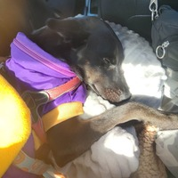
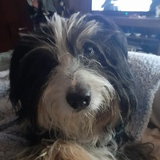
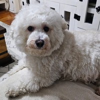

AdoptaUnAmigo es una organización que se dedica a rescatar perros y gatos principalmente, en donde se les da un hogar temporal hasta que alguien los adopte. Cada uno de ellos está esperando a que lo escojas como tu amigo. ¡Adopta!
| Fecha publicación | Comuna | Sector | Cantidad/Tipo/Edad | Foto |
|---|---|---|---|---|
| 2025-08-09, 12:15 | Ñuñoa | Plaza | 1 perro, 2 años |  |
| 2025-08-12, 09:35 | Peñalolén | Alto Peñalolén | 1 perro, 4 años |  |
| 2025-08-13, 15:27 | Santiago | Cerro Santa Lucía | 1 perro, 5 años | |
| 2025-08-17, 04:53 | Santiago | Eurocentro | 1 perro, 1 año | |
| 2025-08-23, 19:30 | Maipú | Metro Santiago Bueras | 1 perro, 3 años |  |